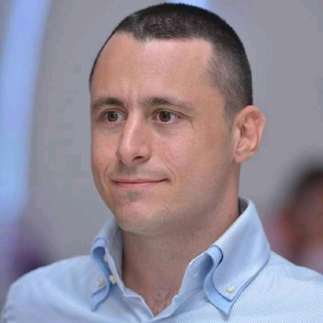

SYSTEM ADMINISTRATOR · LINUX I IT INFRASTRUKTURA
Marko Jovanović

Profesionalni profil
IT profesionalac sa dugogodišnjim iskustvom u tehničkoj podršci i administraciji IT infrastrukture. Trenutno se fokusiram na Linux serverske sisteme, virtuelizaciju, mreže, kontejnerizaciju i održavanje poslovnih servisa. Iskustvo obuhvata rešavanje problema, implementaciju servisa i održavanje stabilnosti infrastrukture.
Radno iskustvo
System Administrator
2022 – danas · Beograd, SrbijaEnergoprojekt-Entel
- Administracija i održavanje Linux servera i poslovnih servisa.
- KVM i Proxmox virtuelizacija; Docker kontejneri.
- Administracija MikroTik RouterOS uređaja, TCP/IP mreža i VPN pristupa.
- Održavanje Samba/SMB file sharing servisa, mail i web infrastrukture.
- Administracija FreeIPA/LDAP autentifikacije i implementacija 2FA.
- Monitoring, backup, troubleshooting i rešavanje infrastrukturnih problema.
- Održavanje infrastrukture za kancelarije u Srbiji i inostranstvu.
IT Helpdesk Technician
Januar 2012 – 2022 · OmanEnergoprojekt-Entel LLC
- Tehnička podrška korisnicima i poslovnoj IT infrastrukturi.
- Dijagnostika hardverskih, softverskih i mrežnih problema.
- Instalacija i konfiguracija računara, aplikacija i periferija.
- Administracija korisničkih naloga, pristupnih prava i Windows/SMB deljenih resursa.
IT Helpdesk Technician
Januar 2005 – decembar 2010 · Srbijateltech d.o.o.
- Podrška krajnjim korisnicima, održavanje računara i periferija.
- Instalacija Windows desktop sistema i poslovnih aplikacija.
- Rešavanje problema sa mrežom, korisničkim nalozima i Microsoft Office paketom.